Jenga: Effective Memory Management for Serving LLM with Heterogeneity
SOSP ’25
gpu
llm
attention
memory
systems
Jenga: Effective Memory Management for Serving LLM with Heterogeneity
Background & Motivation
LLM Serving and the Memory Bottleneck
- Batching is crucial for high-throughput LLM serving.
- Batching imposes heavy pressure on GPU memory capacity due to the KV cache (intermediate token embeddings).
- PagedAttention is the industry standard:
- Divides memory into fixed-size pages.
- Relies on two assumptions: Fixed-size embeddings and Full attention across all layers.
The Rise of Heterogeneous LLMs
- Modern LLMs invalidate PagedAttention’s core assumptions.
- Traditional LLMs: Homogeneous layers, uniform memory usage.
- Heterogeneous LLMs: Mix of full attention, sliding window, and Mamba layers. Memory usage varies drastically across layers and request lengths.

Source of Heterogeneity 1: Embedding Sizes
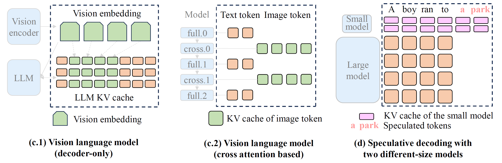
- Vision Language Models (VLMs): Image tokens and text tokens have naturally different embedding sizes.
- Speculative Decoding: Running a small draft model and a large target model concurrently requires managing two vastly different KV cache sizes.
Source of Heterogeneity 2: Attention Mechanisms
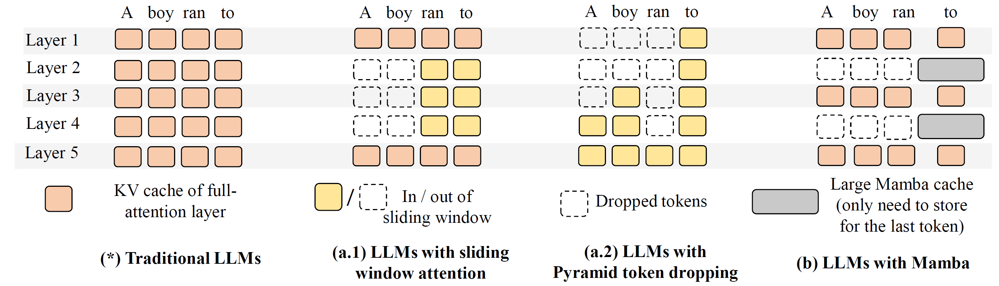
- Sparse/Sliding Window Attention: Only attends to a subset of recent prefix tokens.
- State Space Models (Mamba): Uses a large, fixed-size tensor to capture history, independent of sequence length.
- Full Attention: Attends to all previous tokens.
The Problem: Severe Memory Fragmentation
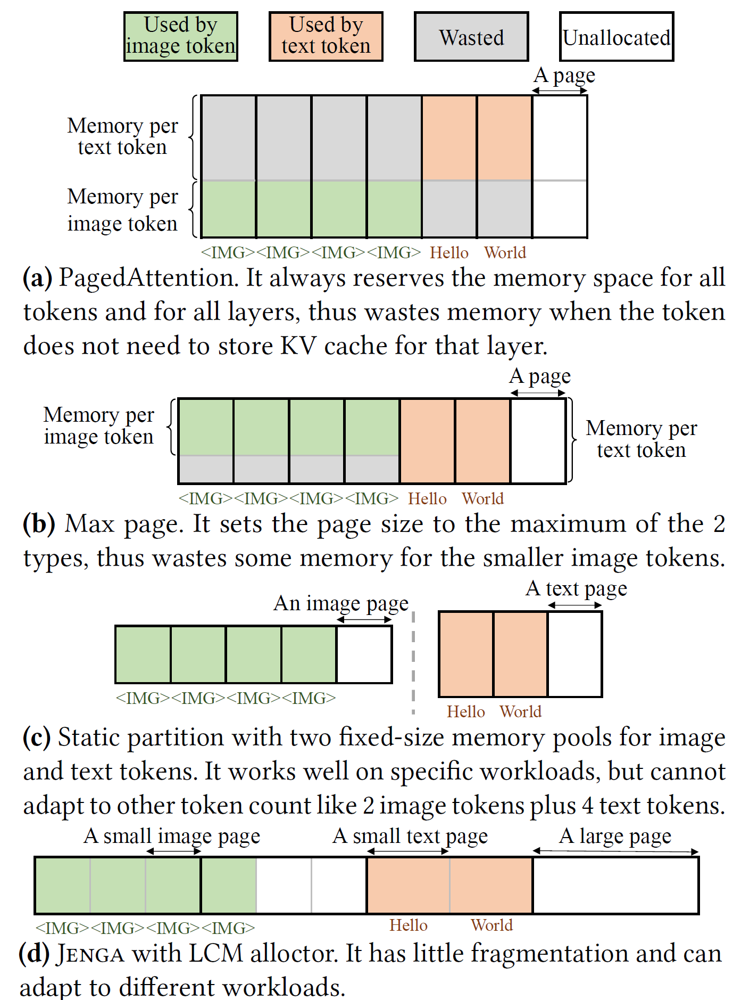
- PagedAttention forces different-sized embeddings into a single fixed page size.
- Max Page: Wastes memory for smaller embeddings.
- Static Partition: Cannot adapt to dynamic workload changes (e.g., varying ratios of text vs. image tokens).
- Result: Up to 79.6% memory waste in models like Llama 3.2 Vision.
The Problem: Inefficient Prefix Caching
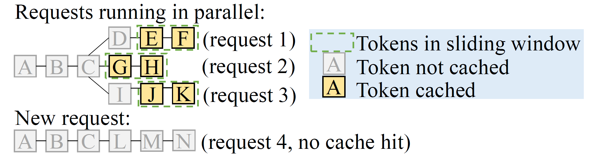
- Cache hit dependency: Efficient attention layers (like sliding windows) only need a small subset of recent tokens to generate the next token.
- Forcing them to cache the entire sequence wastes memory.
- Trade-off: Allocating memory to cache inactive tokens improves cache hit rates but limits the maximum batch size for active requests.
System Design
Jenga System Architecture
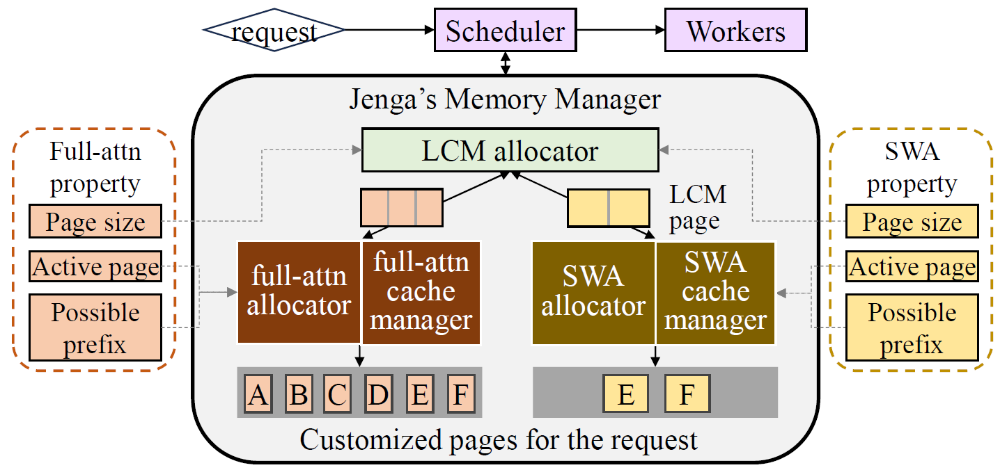
- A heterogeneity-aware memory management framework.
- Layer Property Interface: Abstracts the behavior of different attention mechanisms.
- LCM Allocator: Avoids fragmentation across heterogeneous layers.
- Customized Cache Managers: Optimizes prefix caching per attention type.
Layer Property Interface
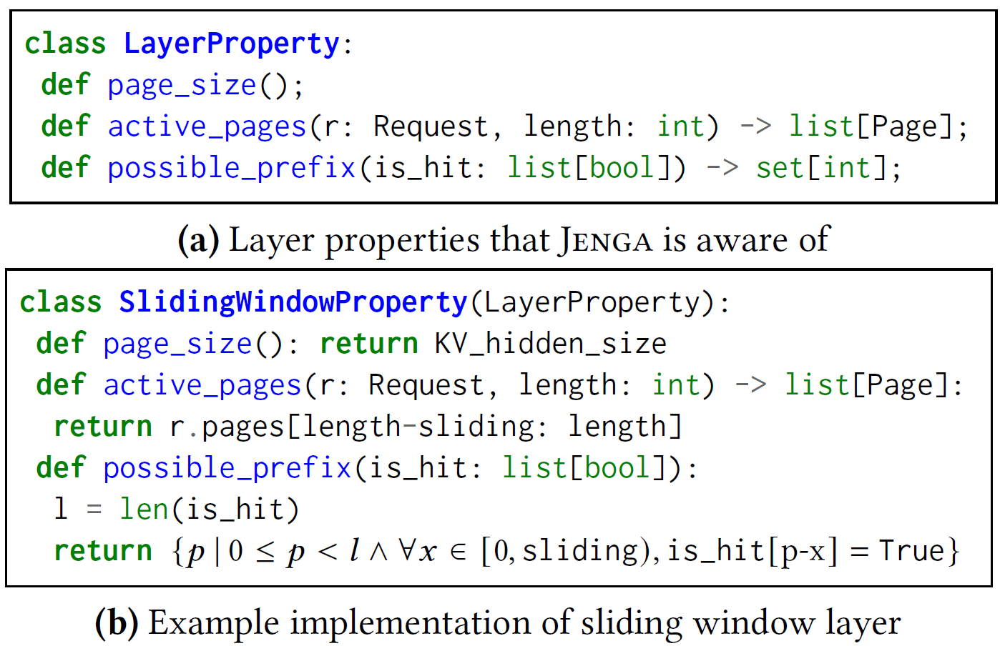
- Jenga models attention behaviors through three attributes:
page_size(): Memory footprint per token.active_pages(): Pages needed to compute future tokens (guides eviction).possible_prefix(): Valid prefix cache hit lengths.
- Automatically parses model structures without manual configuration.
LCM-based Two-Level Memory Allocation
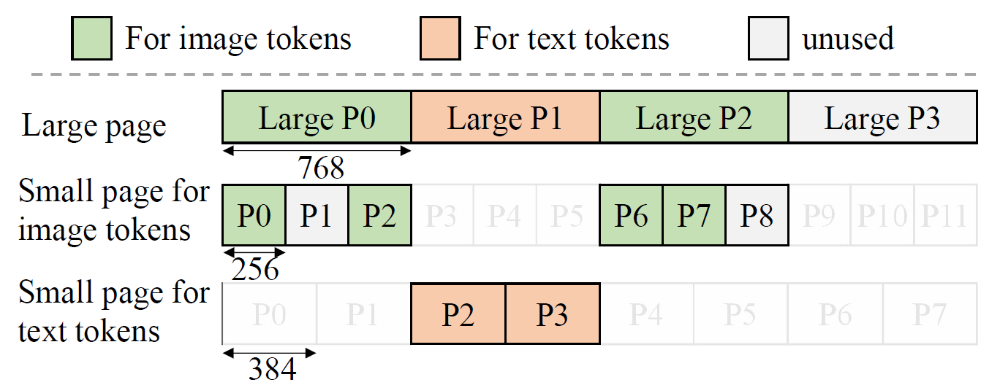
- Large Pages (Global): Size is the Least Common Multiple (LCM) of all layer page sizes (e.g., LCM of 256 and 384 is 768).
- Small Pages (Layer-Specific): Customized allocators partition large pages into exact small pages needed for specific layer types.
- Completely eliminates external fragmentation and minimizes internal fragmentation.
Execution with New Memory Layout
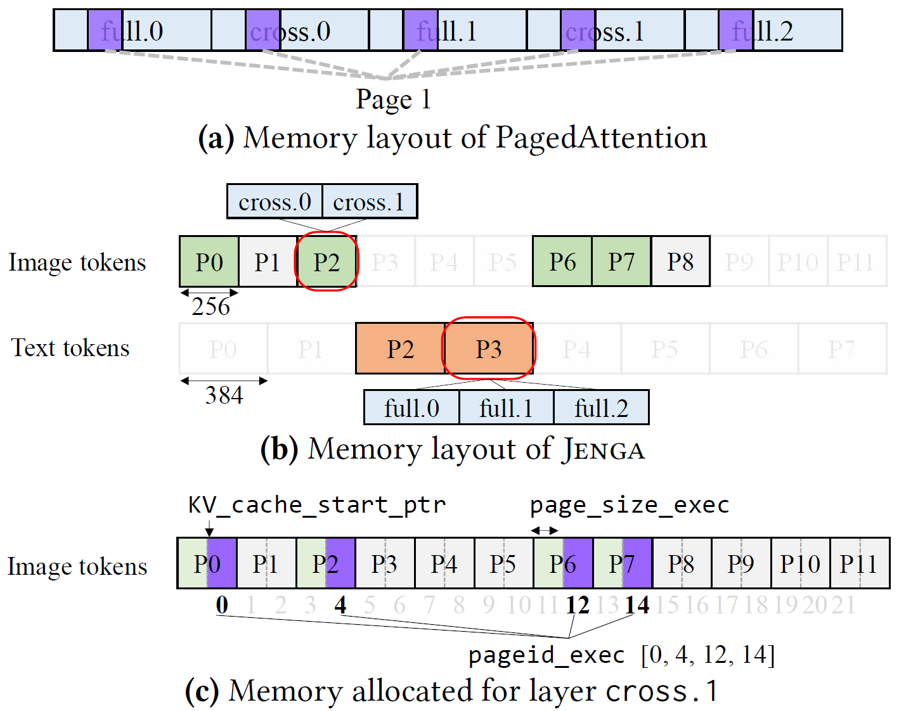
- PagedAttention: Uses a layer-page partition (allocates fixed-size tensors for each layer).
- Jenga: Uses a page-layer partition.
- Preserves the original PagedAttention worker interfaces with minimal changes to the inference engine.
Customizable Prefix Caching
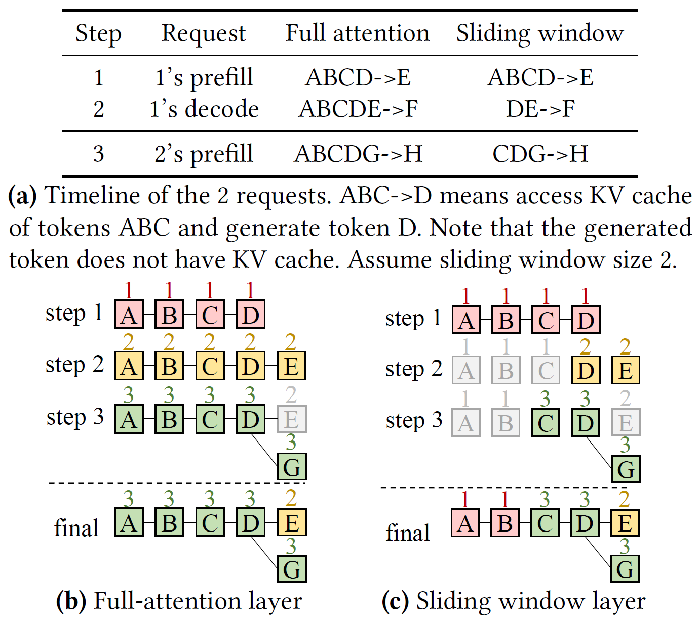
- Smart Eviction: Jenga overrides the “last access time” based on layer properties.
- For sliding window layers, tokens outside the window are not updated, making them a higher priority for LRU eviction.
- Maintains balanced eviction across different layers to prevent bottlenecking the overall cache hit rate.
Common Page Pool
- The Trade-off: Increasing batch size evicts prefix caches, lowering hit rates.
- Solution: Jenga introduces a “Common Page Pool” to protect highly reusable pages.
- Common Prefix Predictor: Analyzes request arrival intervals and shared prefixes to predict which tokens will be reused (e.g., system prompts).
- High-value pages are kept in the common pool; the rest are aggressively freed to maximize batch size.
Evaluation
Environment Setup
- Implementation: ~4,000 LoC integrated into vLLM v0.8.3.
- Hardware: NVIDIA H100 80GB and NVIDIA L4 24GB GPUs.
- Models: Llama 3.2 Vision, Gemma-3, Ministral, Llama 4, Jamba-1.5, Character.ai.
- Baselines:
- vLLM (PagedAttention)
- Static Partition
- Max Page
End-to-End Throughput
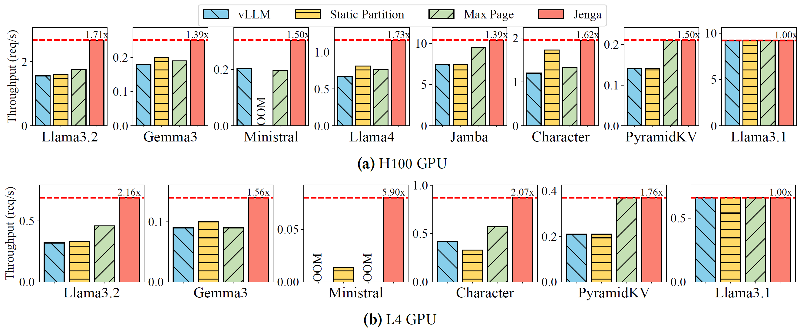
- Jenga achieves up to 1.73x speedup (1.46x average) on H100.
- Jenga achieves up to 2.16x speedup (1.65x average) on L4.
- Outperforms naive extensions (Static Partition / Max Page) across all heterogeneous models.
End-to-End Latency
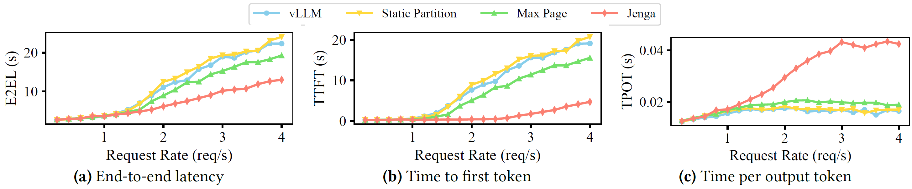
- Evaluated on Llama 3.2 Vision Model.
- At low request rates, Jenga matches vLLM latency (no overhead).
- At high request rates, Jenga reduces end-to-end latency by up to 1.90x and Time-To-First-Token (TTFT) by up to 23.40x due to larger batch sizes and reduced queuing delay.
Memory Fragmentation Analysis
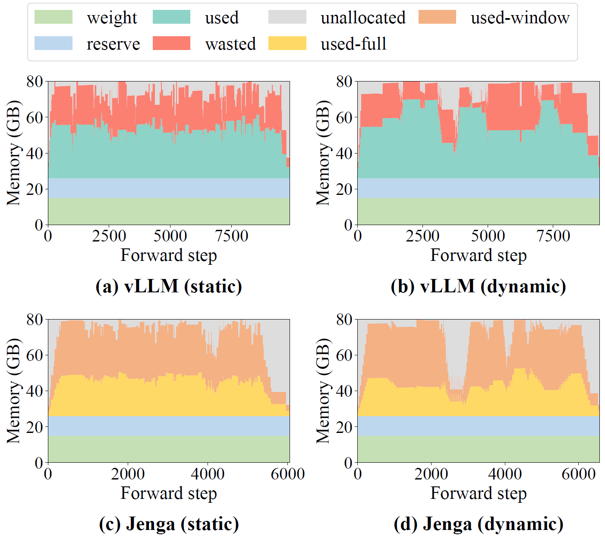
- vLLM: Wastes 38.2% of KV cache memory on average (fails to free sliding window tokens outside the window).
- Jenga: Reduces KV cache memory waste to 0.04%.
- Dynamically adjusts memory allocation between full-attention and sliding-window layers based on workload.
Case Study: Speculative Decoding
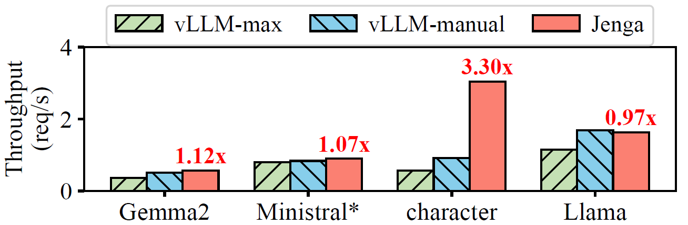
- Speculative decoding runs a small draft model and a large target model simultaneously.
- Jenga automatically handles the different KV cache sizes with negligible fragmentation.
- Achieves an average 1.58x throughput improvement on heterogeneous LLMs compared to manually-designed memory allocation strategies.
Maximum Context Length
- Model: Llama 4 (109B, 10M-context model)
- Hardware: Single 8xH200 GPU node.
- vLLM: Fails to fit the full context (OOM at 3.7M tokens).
- Jenga: Reduces per-request memory usage by 4x by freeing inactive pages.
- Result: Successfully supports the full 14.7M context length on a single node.